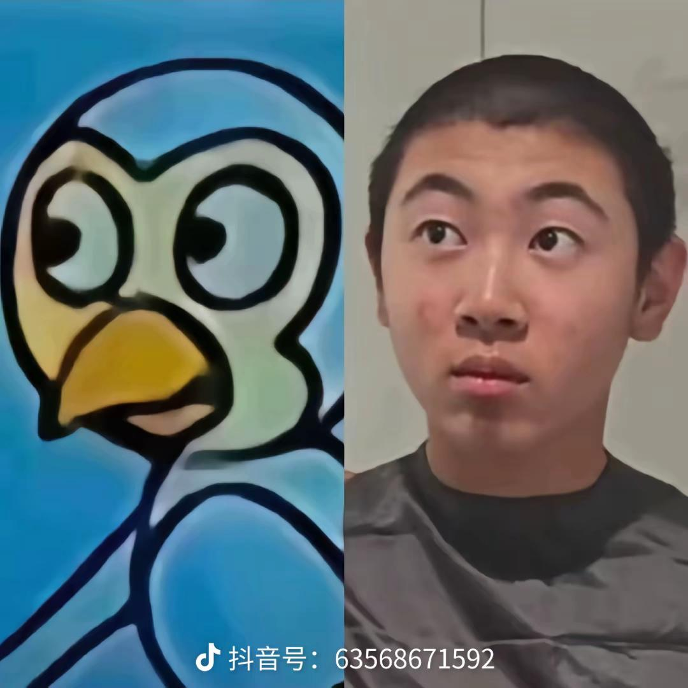

一石二鸟，既做到鼓励婚育目的，又能卖出彩票，高[赞]
换上1979年进越的军装 [看]
上不得台面具象化[捂脸]
。。。感觉能结婚的女人都很能忍
东榔西投南照北抽
终于知道他们说的"上不得台面的东西"到底是什么样的了
原来大家结婚 结的都是这种婚啊
找这种男的给人一种新娘有异食癖的感觉[尬笑]
果然包容性很强才能结婚[微笑]
月经是可以憋的 烟和槟榔是忍不了一点的
婚礼四大天王：东投 西照 南抽 北榔
忙了一天回到家看到这样的老公，真的天都塌了
很难想象 这些玩意儿婚后能承担起丈夫的职责 爱妻 育儿 顾家
难登大雅之堂
这家伙怎么娶到这么漂亮的媳妇的[九转大肠][九转大肠]
这些个玩意儿们都有人嫁[泣不成声]
前狼假寐，盖以诱敌
螺纹钢都挡不住你那躁动的小手[不失礼貌的微笑]
尿频的基本喝酒都挺猛的，别人正上头呢他哐哐跑厕所没一会酒劲过了
叔，子恒现在越来越帅了，不准再给他修那个河童寸头啦[看]
子恒鸟时候： 
大家真觉得这是在玩梗吗[愉快]
子恒的头发长了什么时候理个发
大家有没有刷到过一个直播弹钢琴的自闭症小孩，叫什么来自星星的孩子，我怎么感觉他那个眼神不像自闭症
我去喊我姐妹
我妈一个，我一个；我妹一个，我一个；我姐一个，我一个；我姑一个，我一个；我妗子一个，我一个；我姥一个，我一个；我奶一个，我一个；我朋友一个，我一个；我闺蜜一个，我还是一个。
谁迈巴鹤违章停车了
说的太对了，这就是黑社会
男的就是不想留下结婚和离异记录，想用头婚再找一个[暗中观察][暗中观察][暗中观察]
下班前领导在群里布置任务，我回复了一个[OK]，领导以为是回复收到，其实我是谈了他一个脑瓜崩[看][看][看]
那时候 我在上海 有个富婆和我说 如果我愿意陪他去伦敦 就给我一套房 肤浅 肤浅 我当时断然拒绝了 男人是不会因一套房出卖自己的
一分钟前 上海
我的室友喜欢飞鸟侧平举这是他的照片
行，一般人我不告诉他快去吧兄弟们
？
《和坐姿推肩比，我更喜欢坐姿推肩》[微笑][强壮]兄弟你诺了你知道吗？？
侧平举是我训练斜方肌的王牌动作[憨笑]
俺不中嘞
已微死[呆无辜]
咪：我好像有点死了
我怀疑它挣扎了很久然后没挣脱就原地睡着了[捂脸]
乖乖：你再晚来一会我就真死了
好奇怪自从刷到过一个小猫绕脖火了，就频繁看到类似视频……
这肯定故意缠上去的。我翻看了这人的抖音，大部分都是一会小猫这里出现意外，一会那里又出现意外。而且自从刷到过一个小猫绕脖火了，就频繁看到类似视频，细想一下哪有这么多小猫被绕脖子啊，地狱空荡荡魔鬼在人间。
我家公公就是大体老师！[流泪][流泪][流泪]致敬老人家的大爱精神[赞][赞][赞][玫瑰][玫瑰][玫瑰]
笑死老子了
看到这个截图，我绷不住了[捂脸]
上帝给刘宇宁关了哪扇窗[看]
谁懂我把刘宇宁拉麦的一瞬间帅到了[舔屏][舔屏][舔屏]
赛前网暴裁判，赛中靠裁判获利，赛后还要追着裁判打，这就是铁血
我朋友皇马死忠 发的朋友圈 笑死我了
皇马现状 赛前：压力裁判[尬笑] 赛中：依靠裁判[尬笑] 赛后：怒喷裁判[尬笑] 总结：你们有几个欧冠[666]
下半场没熬住睡着了，醒了发现逆转了
人：取货码9384 快递员：出去玩了
我的狗子今天刚到家[尬笑]
有没有人跟我一样咳了一个月了[捂脸][捂脸]，这个视频里面也有人在咳嗽[捂脸][捂脸][捂脸]
《你的快递正在欺负别人的快递》[憨笑]
我干韵达的时候，有人买了三只香猪，箱子烂了，满仓库追猪[捂脸]
100买的还算听话
给你们看个更炸裂的[捂脸]
见过买牛的 [九转大肠]哈哈哈哈转转请回收我的笑点
干过快递一个月 有人买两头猪放驿站被投诉了 疯狂在外面拉屎[黑脸]
朋友圈刷到的，有人在网上买了一只猪[捂脸]快递员在分拣站追了一个小时[捂脸]
它还挺乖的，知道自己是个商品[憨笑][赞]
鸡也到了[看]
狗狗都是老演员了 每个视频都是它 每次取件码都不一样
欧文即视感
虽然但是 感觉很容易肘到别人的头[黑脸]
看到这想起前年关注了一个糖尿病足的双脚烂透了自己拿剪刀剪下来了[尬笑]
给它留着，等百年以后一起下葬，也好留个全猫[尬笑]
我爷爷以前的猫踩抓黄鼠狼的铁夹子，前腿被夹断，耷拉着断腿自己跑回来，爬地上舔伤口，天亮我爷爷醒来一看前腿断了，叫兽医来截肢，全程没叫过一声，后来就三条腿了
它怎么情绪这么稳定
真不敢相信，姐姐化妆了。[呲牙][呲牙][呲牙]
川普这性格适合炸金花[尬笑]
泽连斯基从喜剧演员干成了总统 特朗普从总统干成了喜剧演员！
老特说，有事问昨天的我，没事问今天的我
特朗普：做人要灵活，昨天的我不是今天的我[捂脸]
急需一个车队，不管什么车队[耶]
前期一股草原味，后期一股原唱味[宕机]
她不是胖，而是艺术充满了身体
如何在15分钟内杀掉5个人，答案是相互信任[流泪]
考试时一边遗忘一边拼凑
“上天没给我好看的身材，但给我了被天使吻过的嗓子”[赞]
我想问问，人活着的意义是什么呢？
第一句有种在草原唱的感觉
Read more: